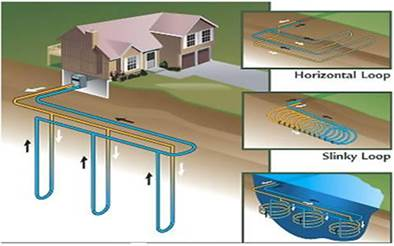

Energia geotermală este o formă de energie obținută din căldura aflată în interiorul Pamântului. Apa fierbinte și aburii, captați în zonele cu activitate vulcanică si tectonică, sunt utilizați pentru încălzirea locuințelor si pentru producerea electricității.Este o formă de energie regenerabilă.
Energia geotermala reprezinta caldura continuta in fluidele si rocile subterane. Este nepoluanta, regenerabila si poate fi folosita in scopuri diverse: incalzirea locuintelor, industrial sau pentru producerea de electricitate
Rezervoarele geotermale, care se gasesc la cativa kilometri in adancul scoartei terestre, pot fi folosite pentru incalzire directa, aplicatii ce poarta numele de utilizare directa a energiei geotermale.

Sistem geothermal de incalzire.
Printre dezavantajele centralelorgeotermale se numara cresterea instabilitatii solului din zona, putand fi cauzate chiar si cutremure de intensitate redusa. In plus, zonele cu activitate geotermala se racesc dupa cateva decenii de utilizare, deci nu se poate vorbi de o sursa infinita de energie, dar cu siguranta avem de-a face cu surse regenerabile. O explicatie pentru racirea zonelor cu activitate geotermala ar fi si faptul ca centrala geotermala instalata este prea mare pentru capacitatea de incalzire a zonei respective.
Printre avantajele centralelor geotermale se numara faptul ca energia rezultata este curata pentru mediul inconjurator si regenerabila. In plus centralele geotermale nu sunt afectare de conditiile meteorologice si ciclul noapte/zi. Energia geotermalaeste si mai ieftina de obicei decat cea rezultata din combustibilii fosili.